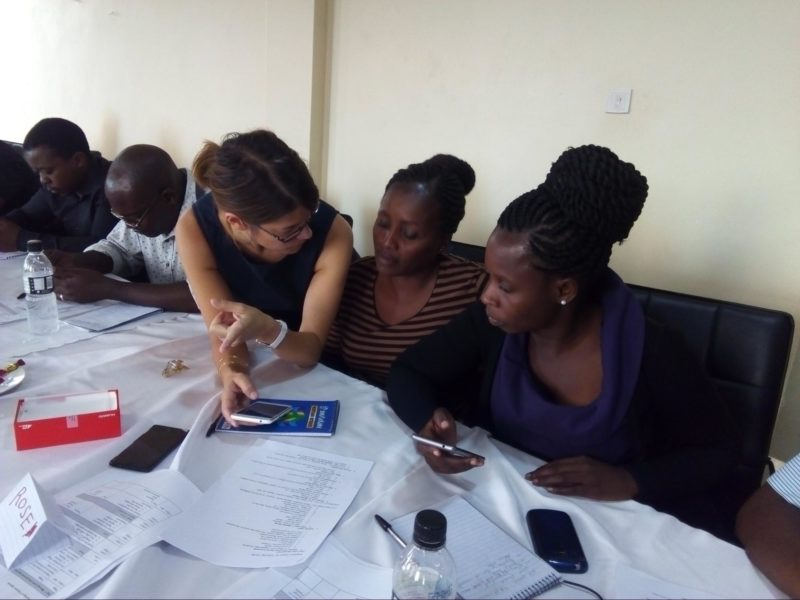

Congratulations on designing and building a new feature for your mobile data collection app! Scoping the proper process and actually designing the feature itself is no small task. But as always, the job is not done. The next step is making sure the feature works and hasn’t disrupted any functionality in your app. Then, it’s time to introduce it to your team.
This post will guide you through the process of testing your new feature and training your team in how to use it:
Prepare: Test your new feature
When conducting quality assurance on a new feature built within an existing system, the motto is ‘test early, test often, and test always’.
To determine how to QA your new feature, a fundamental question is whether the new feature is completely isolated from the rest of my app or integrated into pre-existing workflows.
If it is isolated, you may be able to conduct unit testing and focus only on the area(s) of the app impacted by your changes. If it is integrated, you will need to conduct more rigorous testing to confirm that your changes have not negatively impacted existing workflows or made any unwanted changes to your data model or collection tool, in general.
To ensure that you account for the potentially far-reaching impact of your changes, consider a few additional types of tests:
- Structural testing. For new features that could change the way your data is saved or updated, testing the data structure will be crucial. CommCare Tip: Use the Case List Report and form/case exports to review data from your form submissions.
- Negative testing. Thinking through the edge cases and inputs you don’t expect to work helps to ensure that the app continues to function even with unexpected user behavior.
- Backward compatibility testing. Rolling out changes in an app already being used to collect data requires a different type of testing than releasing a first version of your application, especially if you’re building in an app designed to manage cases over time. To ensure that all of your user interfaces and data continue to work as expected in the new version, testing new features or workflows with cases created on earlier versions of the application will be imperative.
While testing will never perfectly cover all scenarios or permutations, you want to make sure you cover the core workflows in the app and target areas of the app with brittle code or known dependencies on your changes. In order to do so, the functional and technical requirements should be well documented.
Your goal by the end of testing is not necessarily to ensure that you have a perfect product but rather to make sure the new feature works and the old features remain intact.

A Dimagi project manager collects user feedback from two community health workers in India.
Introduce: Rolling out changes to users
You have built the new feature into your mobile application, tested it to ensure that everything works, and now it is time to send it out for your hardworking team of data collectors to use in the field!
Preparing your training strategy
After a long development and testing period, we understand the temptation to click the ‘Release’ button and get your changes into the field as quickly as possible. When choosing your training strategy and release timeline, here are some factors to consider:
- Time since last release: How much time has passed since the last release or since the user last received training? If the users are interacting with updates more regularly, they may require less intensive training on a new feature. However, if it has been several months or longer since the last release, it might be valuable to consider adding a refresher training component to your training schedule.
- Types of users: Your training strategy depends a lot on your audience. For example, users who have been using the app for a longer period of time might require training on a new feature but might not require retraining on existing functionalities. If your program has a sizeable number of users who are new to the system, however, you’ll want to include information about the new feature as a part of their overall orientation.
- Upcoming release plans. Before releasing your new changes, think ahead about your medium- to long-term release plans and training capabilities. For cases in which you plan on releasing more than one new version over the span of a few months, it could be better to combine your changes into one release instead of pushing several smaller releases to the field.
- Acceptance of the new feature. Consider and emphasize the value of the new feature to the user. Does the new feature correspond to a change they requested? Is the new feature addressing an issue that they previously reported? Emphasizing changes made to improve the user experience or as a response to user feedback will help increase buy-in and usage after the release.
Bonus Tip:
The times you choose NOT to release your application can be just as important as the times you do release. For best results, don’t deploy:
- Outside of normal work hours
- During local holidays
- Right after initial trainings or when users are still getting used to the system
Communicating to users about the new feature
Often it’s a challenge to organize refresher trainings. Here are a few tips on how to communicate changes to your users.
- Create release notes that cater to both the trainers and the end users by highlighting training implications and examples of use cases.
- Leverage existing communication channels and modes of communication that a user might interface with. For example, instead of sending emails you could consider sending your release notes through SMS or WhatsApp.
- Tailor your content to the communication medium. For example, a presentation or PDF might work well over email or in person but short video or audio clips might work better over a messaging tool like WhatsApp.
- Localize and simplify your language. When required, translate your release notes and training content in the target audience’s local language.
- Make sure the communication strategy matches the type of feature being released. For example, an informal text message might suffice for a change like adding a lookup table, but changing the way the user can close a case might require in-person refresher trainings.
- Depending on the scale of your program, you might pilot the communication strategy and release with a subset of your users to see what works. This also applies to your user acceptance testing.
- If possible, consider incorporating training content into the app itself to help the user navigate between the old version and the new version with prompts or guided tutorials.

A training of trainers on a maternal and child healthcare and nutrition application in Malawi.
Test. Then Test. Then Test. Then Share.
Prioritizing testing during development will allow you to build a more functional solution and help you to avoid disrupting functionalities that your users rely on. As we said, test early, test often, test always. Then, forecast your training needs and plan your communication strategy to ensure that the new features you’ve introduced will strengthen your users’ engagement with the system, leading to higher usage and greater impact.
Simply designing and building a new feature will get you in trouble if it doesn’t work or your team doesn’t know how to actually use it. So set yourself up for success by taking the time to test the new functionality and all of its possible effects. But more importantly, set your team up for success by designing a training and communications strategy that leaves no room for confusion.